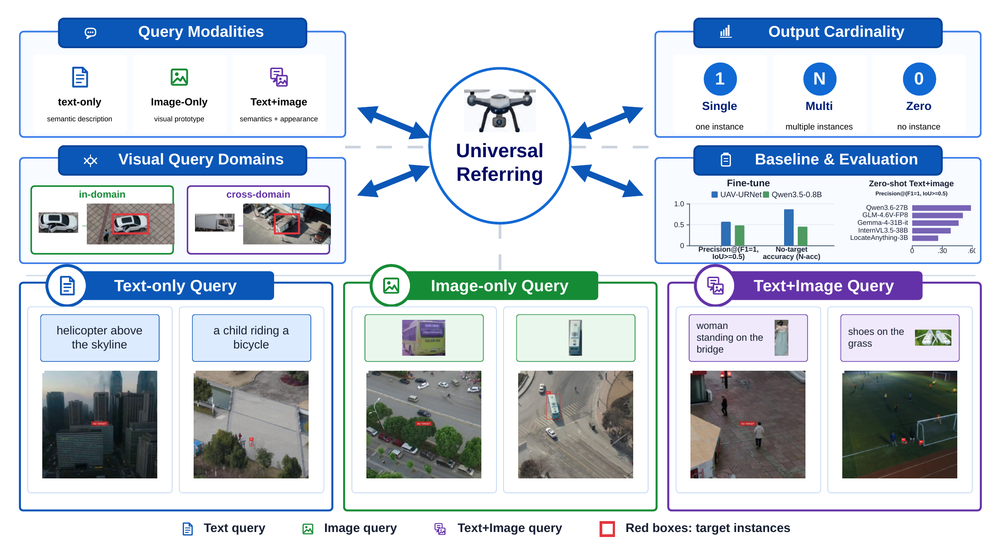

UniRef-UAV
A Multimodal Benchmark for Universal Referring in UAV Imagery
UniRef-UAV expands UAV referring along two axes at once: query modality and output cardinality. It supports text-only, image-only, and text+image queries, while grounding zero, one, or many targets under modality-aware constraints.
Introduction Figure
The full task space in one view
This figure comes directly from the paper introduction. It summarizes the three query modalities, modality-aware output cardinality, visual-query domain settings, and the benchmark's representative use cases.

Benchmark Design
Built for the real failure modes of UAV referring
Three complementary query modes
UniRef-UAV covers text-only, image-only, and text+image referring, so the benchmark can test semantic description, visual prototype matching, and multimodal disambiguation in one framework.
- T
- V
- T+V
Variable-cardinality grounding
Text-only and text+image queries allow zero, one, or many targets. Image-only queries are constrained to 0/1 outputs because pure visual prototypes are ambiguous for unrestricted multi-instance grounding.
- 0
- 1
- N
In-domain and cross-domain visual queries
Visual-query evaluation is split into in-domain and cross-domain settings to expose how well models generalize when the support image comes from a matching UAV scene or from an external web domain.
Large enough to matter
The benchmark aggregates 48,470 images and 156,987 base queries from 22 public UAV datasets spanning traffic, low-altitude flight, and open-field aerial scenes.
Why this task is different
Classical REC assumptions break in aerial scenes
UAV imagery brings dense distractors, tiny targets, weak texture, broad scene coverage, and naturally variable target counts. A single text expression with a guaranteed one-target output is too narrow for that operating regime.
How it is evaluated
Exact-set correctness instead of loose overlap alone
UniRef-UAV follows a GREC-style protocol with exact set matching. The paper reports P@(F1=1, IoU>=0.5) for target-present samples and N-acc for no-target samples, forcing models to handle both localization and output-cardinality correctness.
Representative Findings
What the paper shows on top of the benchmark release
UAV-URNet establishes a stable task-specific baseline
In the text+image matched-setting reported in the paper, UAV-URNet reaches 54.6% exact-set precision and 93.5% no-target accuracy, offering a lightweight baseline for multimodal UAV universal referring.
In-domain visual queries remain easier than cross-domain ones
Image-only UAV-URNet evaluation shows a large gap between in-domain and cross-domain visual queries, confirming that prototype domain shift is a core benchmark challenge.
Merged training improves modality coverage
The paper's analysis indicates that different query forms provide complementary supervision and help UAV-URNet learn a more unified query-target alignment space.
Zero-shot Evaluation
Representative methods across all three query settings
Metrics: P@(F1=1, IoU>=0.5) and N-acc. -- means unsupported.
| Model | Text-only | Image-only | Text+Image | |||
|---|---|---|---|---|---|---|
| P | N-acc | P | N-acc | P | N-acc | |
| 2+1 single-target transformer | ||||||
| TransVG | 0.034 | 0.000 | -- | -- | -- | -- |
| CLIP-VG | 0.052 | 0.000 | -- | -- | -- | -- |
| SimVG | 0.045 | 0.002 | -- | -- | -- | -- |
| Detection-style (2+2) transformer | ||||||
| MMGroundingDINO | 0.127 | 0.964 | -- | -- | -- | -- |
| MDETR | 0.049 | 0.024 | -- | -- | -- | -- |
| General-purpose MLLM | ||||||
| Qwen3.6-27B | 0.205 | 0.030 | 0.175 | 0.872 | 0.585 | 0.828 |
| GLM-4.6V-Flash | 0.131 | 0.076 | 0.581 | 0.003 | 0.484 | 0.060 |
| MiMo-VL-7B-RL | 0.047 | 0.000 | 0.105 | 0.000 | 0.095 | 0.000 |
| InternVL3.5-38B | 0.148 | 0.006 | 0.441 | 0.147 | 0.384 | 0.233 |
| GLM-4.6V-FP8 | 0.186 | 0.122 | 0.611 | 0.000 | 0.505 | 0.087 |
| Gemma-4-31B-it | 0.204 | 0.840 | 0.553 | 0.375 | 0.462 | 0.837 |
| Grounding-oriented MLLM | ||||||
| LLaVA-Grounding | 0.123 | 0.164 | 0.158 | 0.427 | 0.190 | 0.204 |
| GLaMM | 0.098 | 0.203 | 0.094 | 0.024 | 0.210 | 0.078 |
| Ferret-v2 | 0.129 | 0.536 | 0.077 | 1.000 | 0.060 | 1.000 |
| KOSMOS-2 | 0.097 | 0.000 | -- | -- | -- | -- |
| Griffon | 0.011 | 0.011 | 0.061 | 0.741 | 0.040 | 0.628 |
| Rex-Omni | 0.121 | 0.185 | 0.267 | 0.028 | 0.278 | 0.042 |
| Rex-Seek | 0.142 | 0.006 | 0.451 | 0.028 | 0.409 | 0.000 |
| LocateAnything-3B | 0.165 | 0.437 | 0.018 | 0.018 | 0.258 | 0.366 |
Fine-tune Evaluation
UAV-URNet versus lightweight general-purpose MLLM
Merged training and matched training are both shown as reported in the paper.
| Model | Text-only | Image-only | Text+Image | Merged | ||||
|---|---|---|---|---|---|---|---|---|
| P | N-acc | P | N-acc | P | N-acc | P | N-acc | |
| UAV-URNet (matched train) | 0.518 | 0.975 | 0.582 | 0.299 | 0.546 | 0.935 | -- | -- |
| UAV-URNet (merged train) | 0.528 | 0.964 | 0.691 | 0.254 | 0.590 | 0.871 | 0.572 | 0.871 |
| Qwen3.5-0.8b (merged train) | 0.320 | 0.492 | 0.772 | 0.324 | 0.675 | 0.340 | 0.485 | 0.456 |
Cardinality buckets
11,502 no-target / 110,869 single-target / 34,616 multi-target
Benchmark emphasis
multimodal UAV grounding, absent-target reasoning, and flexible outputs